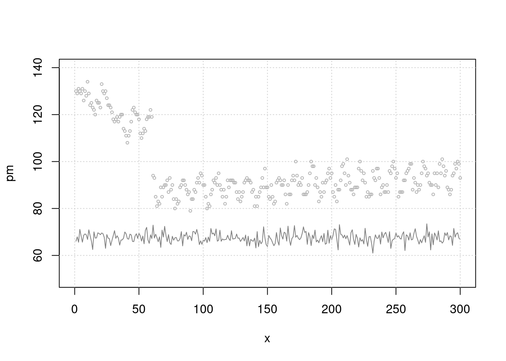
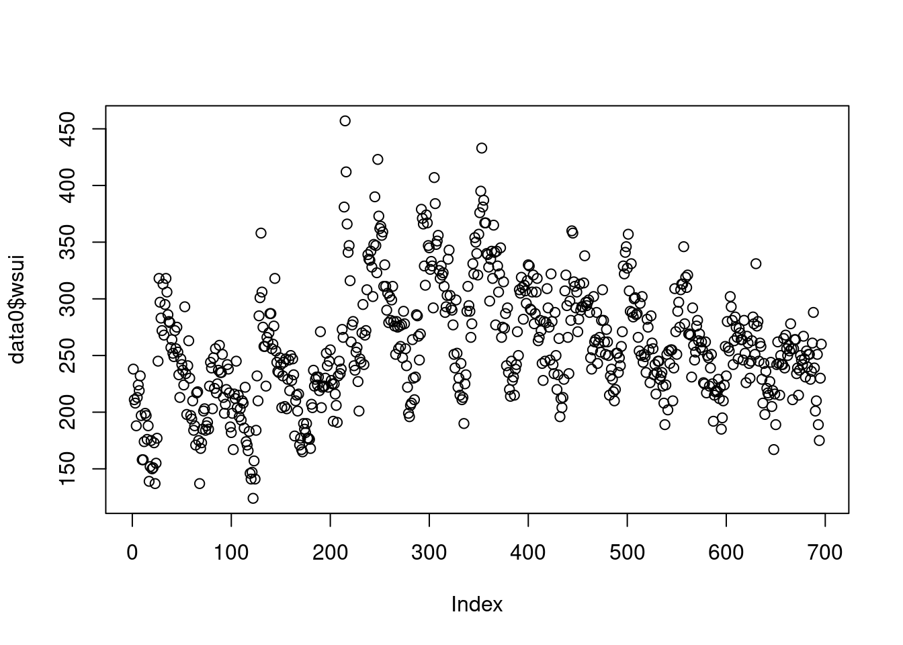
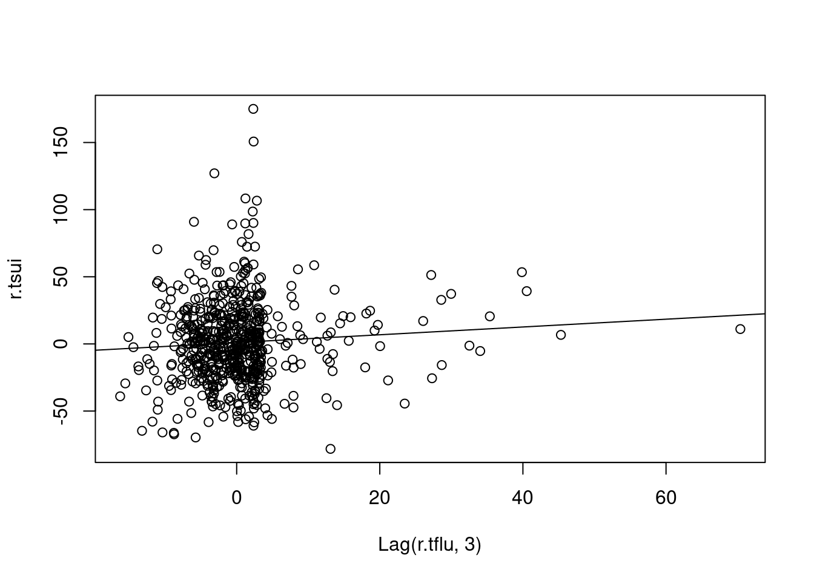
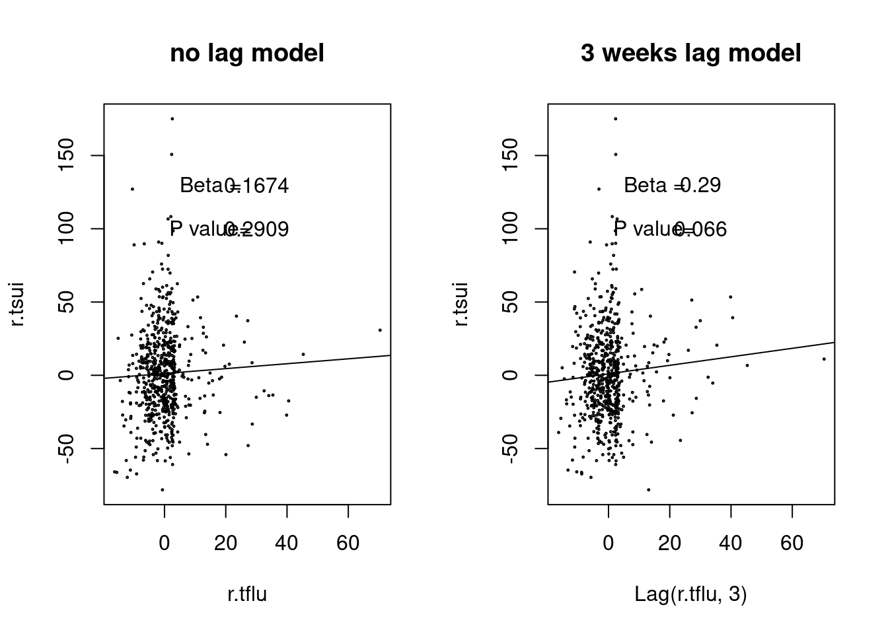
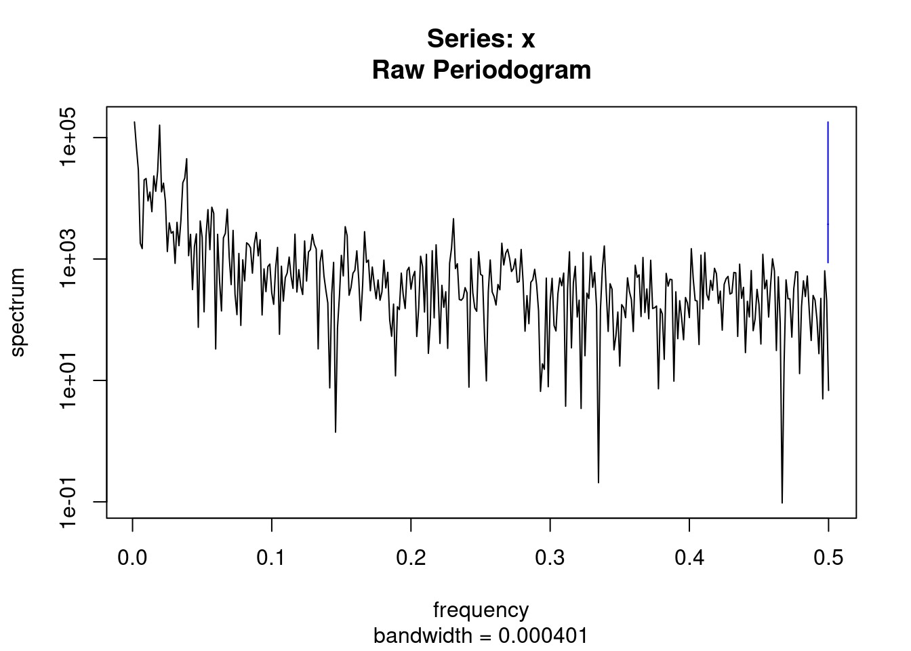
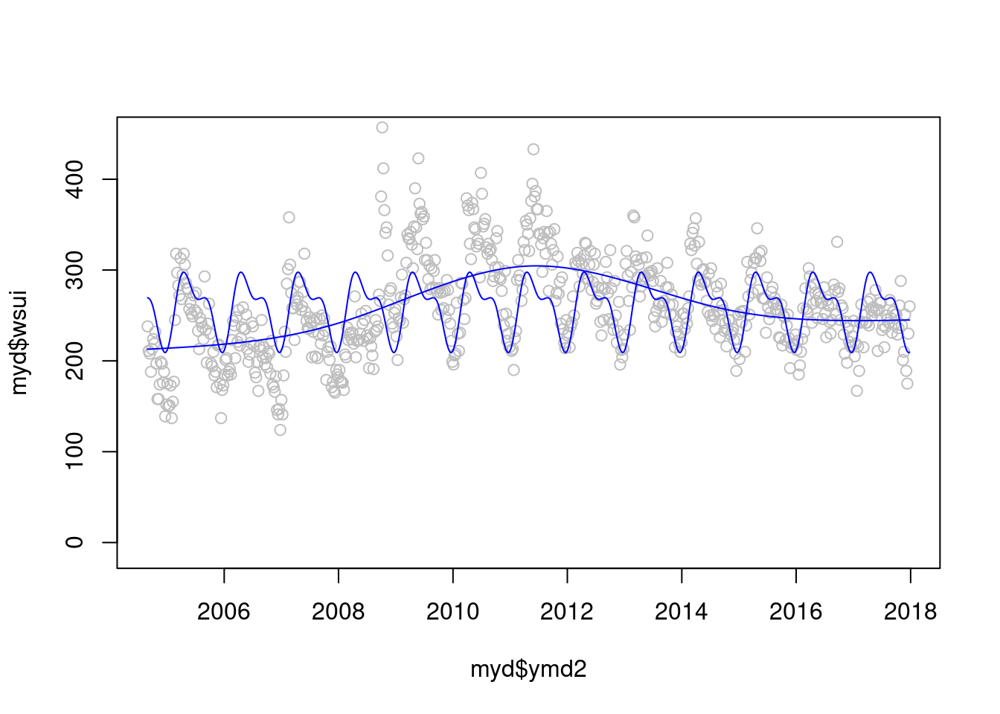
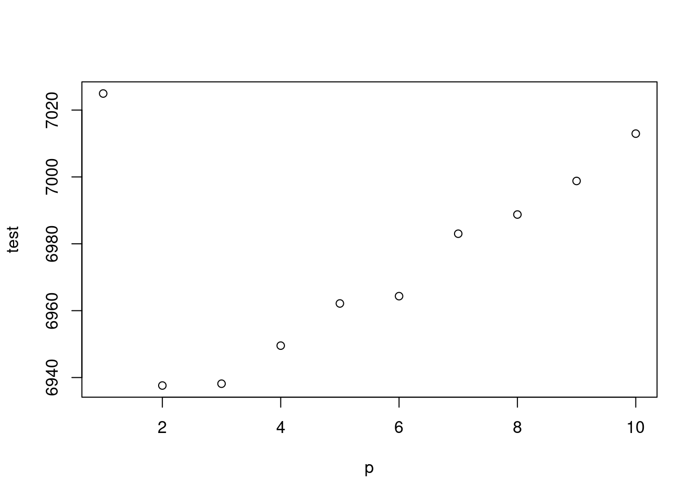
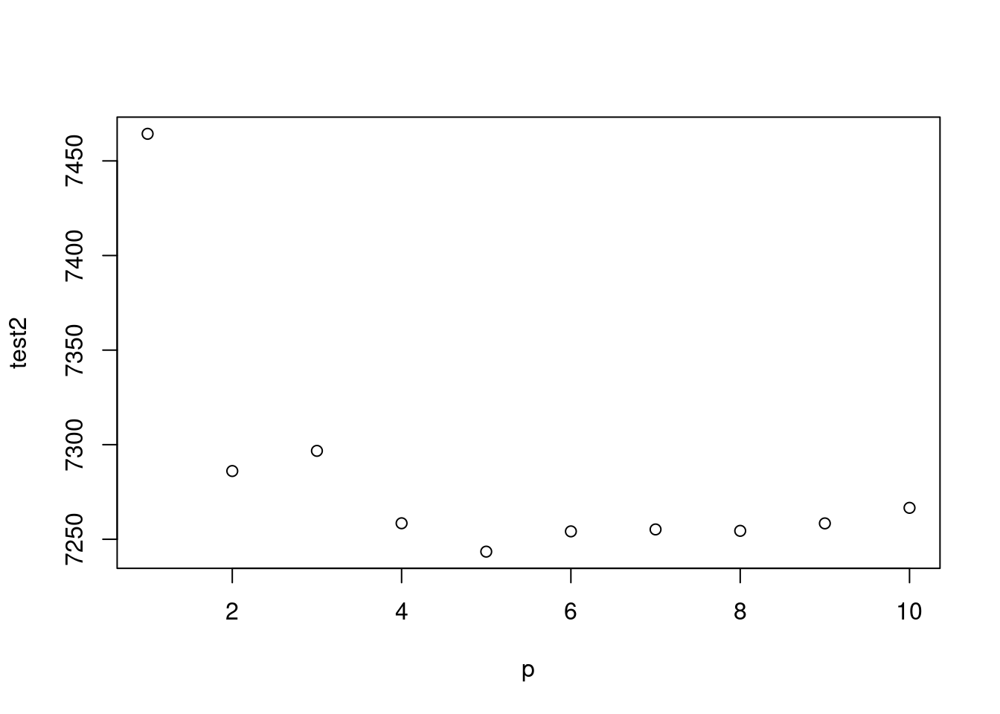
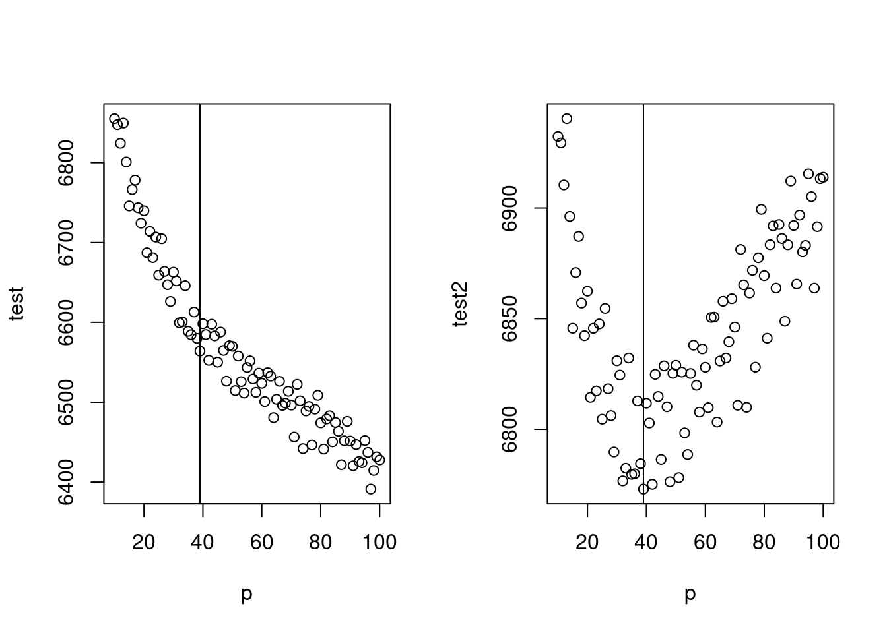

Chapter 6 Time series data analysis, regression
6.1 introduction
시계열적 자료를 분석하고 나타나는 현상과 특정 요인과 관련성을 탐색해보는 시간입니다.
예를 들어 미세먼지가 높은 날 심혈관 질환이 발생하는가?에 대한 질문에 답하기 위해서 생가할 것이 몇가지 있습니다.
미세먼지가 높은 날이란? 심혈관 질환 사망이 높은 날이란? 이 두가지 요소를 검토하게 됩니다.
그런데 심혈관 질환의 사망은 요일마다 다르고, 계절에 따라 변동하며, 장기 적으로는 점차 증가 또는 감소를 합니다. 그런데 미세먼지도 점차 증가하고 있으니, 단순 상관관계를 보면 미세먼지도 증가 심혈관 사망도 증가하면 양의 관련성을 보이게 됩니다.
GDP와 자살의 관계를 보면 어떨까요? 우리나라의 자살률은 증가하고 있습니다. 그런데 GDP도 증가하고 있습니다. 그러니 GDP의 증가와 자살의 증가는 양의 상관관계가 있다고 나옵니다. 맞나요?
네 심혈관 사망, 자살의 증가의 계절적 요소, 장기간 추세(trend)가 아니라 변동이 미세먼지나 GDP의 변동가 어떠한 관계가 있는지가 우리의 궁금증일 것 입니다. 이러한 궁금증을 R을 이용해서 풀어보도록 하겠습니다.
6.2 미세먼지와 심혈관사망
우선 몇가지 시계열 자료 분석의 이해를 돕기 위해 시뮬레이션 자료를 이용해 보겠습니다.
x를 일(day) 로 생각하고, 300일 동안 랜덤 변수 y1과 이에 4.5를 곱한 pm(미세먼지)를 가상으로 만들어 보겠습니다.
set.seed(1)
x <- 1:300
y1 <- 5*rnorm(300, sd=.1)+15
pm <- y1*4.5
plot(x, pm, type='l')
여기에
sin()함수를 통해 계절적 요소를 넣고, 0.03을 곱해 long term trend 가 서서히 증가하는 것으로 가정했습니다.
y2 <- y1*5+ sin(x/2)*5+ x * 0.03
y2[y2< 0]<-0
y3<-round(y2)
plot(y3, type='l')
지연 효과와 특정 이벤트가 있는 날을 넣어 보았습니다. 그리고 dataframe을 만들었습니다.
lag <-6
mean(y3)## [1] 79.58667death <- c(rep(c(80,79,81), (lag/3)), y3[1:(length(y3)-lag)])
event <- c(rep(1, 30), rep(1, 30), rep(0, 240))
eventd <- c(rep(40,30), rep(30, 30), rep(0, 240))
death2<-death+eventd+10
gg <- data.frame(x, pm, y3, death, event, death2)
head(gg)## x pm y3 death event death2
## 1 1 66.09048 76 80 1 130
## 2 2 67.91320 80 79 1 129
## 3 3 65.61984 78 81 1 131
## 4 4 71.08938 84 80 1 130
## 5 5 68.24139 79 79 1 129
## 6 6 65.65395 74 81 1 131이제 그림을 그려 보겠습니다. 첫 50일에 이벤트가 있어 심혈관 사망이 높고 이후 계절적 요소를 보이며 서서히 증가하고 있습니다. 미세먼지는 random + 계절적 요소로 만들었고요.
plot(x, pm, type="l", col=grey(0.5), ylim=c(50, 140), xlim=c(0, 300))
grid()
lines(x, death2, col=grey(0.7), type="p", cex=0.5)
이제 단순 회귀 분석을 해보겠습니다. 어떠한 관계가 관찰되시나요. event 때 많이 사망하고, 미세먼지와는 관련이 없네요. 분명 미세먼지와 관련있게 시뮬레이션 해서 만든 자료인데요. 맞습니다.
lag과seasonality보정이 않되었네요.
mt3 <- glm(death2 ~ x+sin(x/2)+pm+event)
summary(mt3)$coefficients## Estimate Std. Error t value Pr(>|t|)
## (Intercept) 90.10455149 6.861474711 13.1319513 2.476263e-31
## x 0.02379324 0.003500538 6.7970236 5.915161e-11
## sin(x/2) -4.41585403 0.308633540 -14.3077581 1.247252e-35
## pm -0.06144597 0.101078610 -0.6079028 5.437196e-01
## event 35.05109683 0.757861036 46.2500315 3.230388e-137그림으로 확인해 보겠습니다. 무언가 잘못 예측이 되고 있죠?
plot(x, pm, type="l", col=grey(0.5), ylim=c(50, 140), xlim=c(0, 300))
grid()
lines(x, death2, col=grey(0.7), type="p", cex=0.5)
mp3 <- c( predict(mt3))
lines(x, mp3, col=75)
차라리 이렇게 해보는 것은 어떨까요? 시계열적인 요소를 뺀 상태 (residual) 과 미세먼지가 관련이 있나 보는 것입니다 .
mt2 <- glm(death2 ~ x+sin(x/2)+event)
resid_mt2 <-resid(mt2)
risk.m0<-glm(resid_mt2 ~ pm, family=gaussian)
summary(risk.m0)##
## Call:
## glm(formula = resid_mt2 ~ pm, family = gaussian)
##
## Deviance Residuals:
## Min 1Q Median 3Q Max
## -9.6006 -2.2804 -0.1559 2.3275 14.2142
##
## Coefficients:
## Estimate Std. Error t value Pr(>|t|)
## (Intercept) 4.14114 6.79037 0.61 0.542
## pm -0.06128 0.10043 -0.61 0.542
##
## (Dispersion parameter for gaussian family taken to be 14.18007)
##
## Null deviance: 4230.9 on 299 degrees of freedom
## Residual deviance: 4225.7 on 298 degrees of freedom
## AIC: 1650.9
##
## Number of Fisher Scoring iterations: 2risk.mp0 <- c( predict(risk.m0))
plot(pm, resid_mt2, type='p', cex=0.5)
lines(pm, (risk.mp0), col=25)
저는 이것이 더 직관적인데요. 심혈관사망에서 시계열적으로 변동이 있는 부분을 뺀 나머지 (residual) 이 pm 이 변동할 때 같이 변동하면 관련성이 있다고 보는 것이지요.
자 이제 lag 을 줘서 관찰해 보겠습니다. lag을 주면 초반 데이터 숫자가 맞지 않는데요. 이때 pm의 평균 값으로 결측치를 대신해서 해결해 보겠습니다.
mean(pm)## [1] 67.57556lag.pm<-6
pm.lag <- c(rep(67.5, lag.pm), pm[1:(length(pm)-lag.pm)])
resid_mt3 <-resid(mt3)
risk.m1<-glm(resid_mt3 ~ pm.lag, family=gaussian)
summary(risk.m1)$coefficients## Estimate Std. Error t value Pr(>|t|)
## (Intercept) -76.437599 5.21757250 -14.65003 5.620794e-37
## pm.lag 1.131554 0.07720006 14.65743 5.276143e-37risk.mp1 <- c( predict(risk.m1))
plot(pm.lag, resid_mt3, type='p', cex=0.5)
lines(pm.lag, risk.mp1, col=25)
네 이제 pm 과 양의 심혈관 사망에 양의 상관관계가 생겼네요. 우리가 원했던 데이터를 그렇게 만들었었습니다.
> 그림으로 관찰해 보면 빨간색이 lag time을 준것입니다. 누가 더 사망과 관련이 있어 보이나요?
plot(x, resid_mt3, type="l", col=grey(0.5), ylim=c(-15, 40), xlim=c(0, 300))
grid()
lines(x, (pm-50), col=grey(0.7), type="l", cex=0.5)
lines(x, (pm.lag-60), col='red', type="l", cex=0.5)
지금 까지 고려한 것은
sin()으로 계절적 요소,lag으로 지연 효과를 고려해서 시계열적 요소를 없앤다음 (residual), pm과 심혈관사망의 관계를 분석하는 방식으로 해보았습니다. 좀더 쉽게 이것을 해보겠습니다.
library(mgcv)## Loading required package: nlme## This is mgcv 1.8-33. For overview type 'help("mgcv-package")'.mgam<- gam(death2 ~ s(x, bs="cc", k=100)+event, family=gaussian)
p <- predict(mgam)
plot(x, pm, type="l", col=grey(0.5), ylim=c(40, 150), xlim=c(0, 300), cex=2)
grid()
lines(x, death2, col=grey(0.7), type="p", cex=0.5)
legend(x=250, y=70, 'PM10')
legend(x=150, y=65, 'pm10. lag')
legend(x=210, y=110, 'Obs_death')
legend(x=10, y=50, 'Residual(Obs_Death - Gam(fitting)')
lines(x, p)
lines(x, (resid(mgam)+50), col='blue')
lines(x, pm.lag-10, col='red') > 이것을 회귀 분석으로 구해보겠습니다. k 가 높을 수록 모형은 어떠한 가요? 네 즉 위에 lag time 과 k 값을 어떻게 조정하는 지를 고려해야 합니다. 우선 lag time 어떻게 찾을 까요?
> 이것을 회귀 분석으로 구해보겠습니다. k 가 높을 수록 모형은 어떠한 가요? 네 즉 위에 lag time 과 k 값을 어떻게 조정하는 지를 고려해야 합니다. 우선 lag time 어떻게 찾을 까요?
mgam<- gam(death2 ~ s(x, bs="cc", k=100)+event, family=gaussian)
p <- predict(mgam)
risk.pp1 <-glm(death2 ~ p+pm.lag,family=gaussian)
summary(risk.pp1)$coefficients## Estimate Std. Error t value Pr(>|t|)
## (Intercept) -58.3872771 1.937186312 -30.14025 2.402418e-92
## p 1.0000436 0.004566766 218.98286 0.000000e+00
## pm.lag 0.8642815 0.028266084 30.57663 9.482839e-94AIC(risk.pp1)## [1] 885.3135mgam150<- gam(death2 ~ s(x, bs="cc", k=10)+event)
p150 <- predict(mgam150)
risk.pp150 <-glm(death2 ~ p150+ pm.lag, family=gaussian)
summary(risk.pp150)$coefficients## Estimate Std. Error t value Pr(>|t|)
## (Intercept) -72.5953393 6.74682944 -10.75992 5.109224e-23
## p150 0.9979243 0.01630871 61.18966 2.087420e-170
## pm.lag 1.0776412 0.09754736 11.04736 5.349868e-24AIC(risk.pp1, risk.pp150)## df AIC
## risk.pp1 4 885.3135
## risk.pp150 4 1629.2747lag 을 찾아 보겠습니다. pm에 대해 lag을 10일까지, 3차 방정식 형태로 구성해 보고, 그리고 이를 통해 회귀 분석을 시행해 본다는 이야기 입니다.
library(dlnm)## This is dlnm 2.4.2. For details: help(dlnm) and vignette('dlnmOverview').cb1.pm <-crossbasis(pm, lag=10, argvar=list(fun="lin"),
arglag=list(fun="poly", degree=3))
model1 <-glm(death2 ~ cb1.pm+x+event ,
family=gaussian )
pred1.pm <-crosspred(cb1.pm, model1, at=0:100, bylag=0.1, cumul=TRUE)
plot(pred1.pm, "slices", var=1, col=3, ylab="RR", ci.arg=list(density=15,lwd=2),
#cumul = TRUE,
main="Association with a 1-unit increase in PM10")
6일을 lag time으로 하면 좋겠네요.
이제 6일을 lag time으로 설정해서 회귀 분석을 수행하면 된다는 것을 알았습니다. 이제 남은 것은 시계열적 요소를 어떻게 찾고, 어떻게 보정할지, 그리고 이 과정을 어떻게 합리적으로 할지 더 논의 하면 됩니다.
이는 다음 시간에 influenza epidemic 과 suicide의 관계를 관찰해 보면서 논의 하겠습니다. 이 후에는 그럼 얼마의 노출에서 사망이 증가하는지 threshold를 찾는 것 까지 해보면 좋겠습니다.
6.3 case study: influenza epidemic and suicide
이번 시간에는 독감 유행과 자살에 대해 이야기 해보겠습니다. 독감 치료 중 자살하는 것이 수년전에 일본 뉴스에 나왔었는데요, 독감이 주로 유행하는 환절기인 계절적 요소의 문제인지 아니면 정말 독감의 유행이 크면 자살이 일어나는 건지 분석을 통해 알아보고자 합니다.
6.3.1 실습 데이터
첫번째 실습 데이터는 감염병 포탈의 인플루엔자 자료입니다. 여기서 다운로드 합니다.

인플루엔자
두번째 실습 자료는 통계청 사망자료 입니다.

인플루엔자
이 둘을 합해 놓은 자료는 아래에 있습니다.
이것을 data 폴더에 넣겠습니다.
if(!require('gsheet')) install.packages('gsheet')
library(gsheet)
flusui <- gsheet2tbl('docs.google.com/spreadsheets/d/14w0m545SQcrV5YYaHoPfLR3DPcWPqzwleNt-dpdC8so')라이브러리를 불러오겠습니다.
library('dplyr')
library('lubridate')
library('mgcv')
library('dlnm')
library('gam')
library('forecast')
library('Hmisc')데이터를 살펴보면 ymd 는 숫자 형식의 날짜 (기준 1970년 1월 1일), wsui 는 1주간의 자살 사망자 수, ordweek 는 주중 순위, flu 는 주중 천명당 인플루엔자 환자 수.
data0 = flusui
head(data0)## # A tibble: 6 x 7
## ymd wsui ordweek ymd2 nwd YR flu
## <dbl> <dbl> <dbl> <date> <dbl> <dbl> <dbl>
## 1 12660 238 35 2004-08-30 36 2004 0.6
## 2 12667 211 36 2004-09-06 37 2004 2
## 3 12674 208 37 2004-09-13 38 2004 2.1
## 4 12681 188 38 2004-09-20 39 2004 2.2
## 5 12688 213 39 2004-09-27 40 2004 2.5
## 6 12695 224 40 2004-10-04 41 2004 2.4plot(data0$wsui)
신종 플루가 2009년부터 유행했고, 이후 자살자가 관련있다는 뉴스가 나오고 있으니, 2009년 전과 후를 나타내는 변수를 만들겠습니다 .
myd<-data0 %>% mutate(Change=ifelse(YR>2008, "from 2009", "before 2009"))자료가 시계열 자료라는 것을 컴퓨터에게 알려줄 필요가 있습니다. 그리고 싸이클이 있다는 것도요. 우리는 주당 싸이클 (7일 기준)이기 때문에 frequency=365.25/7을 이용하고 시작 날짜를 정해줍니다.
tsui <-ts(myd$wsui, frequency=365.25/7, start = decimal_date(ymd("2004-08-30")))
length(myd$wsui)## [1] 696length(tsui)## [1] 696plot(tsui)
여기서 시계열적 요소를 찾아 보겠습니다.
d.tsui <-decompose(tsui)
#d.tsui
plot(d.tsui) ####### find seasonal and trend
summary(d.tsui$random)## Min. 1st Qu. Median Mean 3rd Qu. Max. NA's
## -78.1819 -18.8440 -0.3562 1.2124 18.5710 175.0412 51이번에는 flu에 대한 시계열 분석을 해보겠습니다.
r.tsui <-d.tsui$random # residuals
s.tsui <-d.tsui$seasonal # seasonal
tr.tsui <-d.tsui$trend # long term trend
######### influenza'
tflu <-ts(myd$flu, frequency=365.25/7, start = decimal_date(ymd("2004-08-30")))
plot(tflu) 이것을 decomposition 하면
이것을 decomposition 하면
d.tflu <-decompose(tflu)
plot(d.tflu) ####### find seasonal and trend
r.tflu <-d.tflu$random # residuals
s.tflu <-d.tflu$seasonal # seasonal
tr.tflu <-d.tflu$trend # long term trend6.3.2 simple time-related variable adjusting regression
결국 resudial flu와 residual sui의 상관관계를 보면 되는 것이라고 생각해 봅시다.
library(Hmisc)
plot(r.tflu, r.tsui)
abline(lm(r.tsui ~ r.tflu))
plot(Lag(r.tflu, 3), r.tsui)
abline(lm(r.tsui ~ Lag(r.tflu, 3)))
par(mfrow=c(1,2))
plot(r.tflu, r.tsui, cex=0.2, main="no lag model")
abline(lm(r.tsui ~ r.tflu))
text(15, 130, 'Beta =')
text(15, 100, 'P value=')
text(30, 130, round(summary(lm(r.tsui ~ Lag(r.tflu, 0)))$coefficients[c(2)], 4))
text(30, 100, round(summary(lm(r.tsui ~ Lag(r.tflu, 0)))$coefficients[c(8)], 4))
plot(Lag(r.tflu, 3), r.tsui, cex=0.2, main="3 weeks lag model")
abline(lm(r.tsui ~ Lag(r.tflu, 3)))
text(15, 130, 'Beta =')
text(15, 100, 'P value=')
text(30, 130, round(summary(lm(r.tsui ~ Lag(r.tflu, 3)))$coefficients[c(2)], 3))
text(30, 100, round(summary(lm(r.tsui ~ Lag(r.tflu, 3)))$coefficients[c(8)], 3)) ### ARIMA
What we can do in this course
Date and Time formatting
Data pre-processing (class ts, cleaning, missing data, outlier)
Statistical Traits of Times series (Autocorrelation, stationarity, seasonality, trend)
| steps |
|---|
| Date and Time Formatting |
| Data Pre Processing |
| Statistical Traits of Time Series |
| Standard Models |
| ARIMA Models |
6.4 analysis and forecasting, regression
Time series analysis is analyzing the data to find patterns, forecasting is extrapolating the patterns into the future, regression with time series pattern (time series regression) is regression method using time series analysis.
6.5 ARIMA
ARIMA (autoregressive intergrated moving average) 는 문자 그대로 자기상관관계와 이동평균을 이용합니다. univariate time series로 보시면 됩니다. ARIMA 모델에서 여러 파라메터를 자동으로 또는 수동으로 설정하여 구성해 가게 됩니다.
ARIMA(p, d, q)를 이해하면서 가 봅겠습니다.
| parameter | content | abbr |
|---|---|---|
| AR | Autoregressive part | p |
| I | Integrateion, degree of differencing | d |
| MA | Moving average part | q |
위 에서 p, d, q를 찾아 가는 방법을 ARIMA 모델이라고 부를 수 있습니다.
lags 과 forecasting errors로 구분할 수 있습니다.
- 과거의 변수가 현재를 예측, autoregressive part
- AR(1) or ARIMA(1,0,0): first order (lag) of AR
- AR(2) or ARIMA(2,0,0): second order (lag) of AR
- 과거의 error 가 현재를 예측 (forecasting error) = moving average part
- MA(1) or ARIMA(0,0,1): first order of MA
- MA(2) or ARIMA(0,0,2): second order of MA
자기상관관계 부분
\[ Y_{t} = c + \Phi_1 Y_{t-1} + \varepsilon_{t} \]
- \(t\) 시간에 관찰되는 변수 (\(Y_{t}\))는
- 상수 (c) 더하기
- 바로 1단위 전 변수 (\(Y_{t-1}\)) 에 계수(coefficient) (\(\Phi\)) 글 곱한 값을 더하고
- 현재의 에러를 \(t (e_{t})\)) 더한다
이동평균 부분
\[ Y_{t} = c + \Theta_1 \varepsilon_{t-1} + \varepsilon_t \]
- \(t\) 시간에 관찰되는 변수 (\(Y_{t}\))는
- 상수 (c) 더하기
- 바로 1단위 전 변수 (\(\varepsilon_{t-1}\)) 에 계수(coefficient) (\(\Phi\)) 글 곱한 값을 더하고
- 현재의 에러를 \(t (e_{t})\)) 더한다
결국 자기 상과관계와 이동평균을 한꺼번에 사용하면 아래와 같습니다.
\[\begin{align*} y_t &= \phi_1y_{t-1} + \varepsilon_t\\ &= \phi_1(\phi_1y_{t-2} + \varepsilon_{t-1}) + \varepsilon_t\\ &= \phi_1^2y_{t-2} + \phi_1 \varepsilon_{t-1} + \varepsilon_t\\ &= \phi_1^3y_{t-3} + \phi_1^2 \varepsilon_{t-2} + \phi_1 \varepsilon_{t-1} + \varepsilon_t\\ \end{align*}\]
d 는 시계열그림에서 ACF, PACF의 형태를 보고 차분의 필요여부 및 차수를 d를 결정하고 AR차수와 MA차수를 결정
어떻게 p, d, q 를 구할수 있을 까요?, 다음 장을 보겠습니다. ** 다음에 기회가 있을 때 하겠습니다.**
6.5.1 arima 감기 자살 , AIC
아래 ARIMA 모델을 보면 AIC 가 6583정도 나온 것을 알 수 있습니다. 우리는 이것을 통해 AIC가 6583 이하 정도 나오는 gam 모델을 사용하겠다 정도의 개념을 얻었습니다.
par(mfrow=c(1,1))
auto.arima(myd$wsui)## Series: myd$wsui
## ARIMA(0,1,2)
##
## Coefficients:
## ma1 ma2
## -0.3227 -0.0993
## s.e. 0.0379 0.0376
##
## sigma^2 estimated as 756.3: log likelihood=-3288.64
## AIC=6583.28 AICc=6583.31 BIC=6596.91myd <-myd %>% mutate(ma4 =ma(wsui, order=4), ymd2=as.Date(ymd2) ) ### 4weeks moving average
myd <-myd %>% mutate(ts.wsui =tsui, ts.ma4=ts(ma4, frequency =365.25/7 ))
m1<-arima(myd$wsui, order=c(1,1,1), fixed=c(NA, NA)) ## NA means include, 0 means exclude
m1##
## Call:
## arima(x = myd$wsui, order = c(1, 1, 1), fixed = c(NA, NA))
##
## Coefficients:
## ar1 ma1
## 0.2294 -0.5589
## s.e. 0.0941 0.0797
##
## sigma^2 estimated as 755.2: log likelihood = -3289.13, aic = 6584.26tsdiag(m1)
6.5.2 AIC BIC in generalize additive model
gg <-function(x) {
model <-glm(data=myd, wsui ~ ns(ymd2, x))
aic <-AIC(model)
return(aic)
}
gg2 <-function(x) {
model <-glm(data=myd, wsui ~ ns(ymd2, x))
bic <-BIC(model)
return(bic)
}
test <-mapply(x=c(50:100), gg);test2<-mapply(x=c(50:100), gg2)
par(mfrow=c(1,2))
plot(c(50:100), test);plot(c(50:100), test2)
abline(v=64)
AIC는 수렴하지 않아 어렵고, BIC는 64에서 최소 값을 보이네요. 64를 자유도로 선정하고 수행하겠습니다.
mod1<-glm (wsui ~ ns(ymd2, 64), data=myd)
BIC(mod1)## [1] 6790.573long term trend (월)과 단기 trend 를 나누어 만들어 보면 어떨까요? 위에 64로 한번에 해결하는 게 더 좋은 모형 같습니다.
mod1<-glm( wsui ~ ns(ordweek, 12)+ns(nwd, 5), data=myd)
BIC(mod1)## [1] 6907.866기존의 sin cosin 방법으로 시계열 분석을 해보는 것은 어떨까요?
par(mfrow=c(1,1))
ssp<-spectrum(myd$wsui)
per<-1/ssp$freq[ssp$spec==max(ssp$spec)]
sin.x<-sin(2*pi*myd$ordweek/(365.25/7))
cos.x<-cos(2*pi*myd$ordweek/(365.25/7))
modsean <-glm(wsui ~ ns(sin.x, 2)+ns(cos.x, 2), data=myd)
modlgam<-glm(wsui ~ ns(ordweek, 4), data=myd)
plot(myd$ymd2, myd$wsui, ylim=c(-10, 450), col='grey')
points(myd$ymd2, modlgam$fitted.values, type='l', col='blue')
points(myd$ymd2, modsean$fitted.values, type='l', col='blue')
자 이제 2 모델을 검토해 보겠습니다. gam 과 sin cosin 모델 어떤게 더 좋아 보이시나요? 정해진 규칙은 겂습니다.
plot(myd$ymd2, myd$wsui, ylim=c(-10, 450), col='grey')
points(myd$ymd2, modlgam$fitted.values, type='l', col='blue')
points(myd$ymd2, modsean$fitted.values, type='l', col='blue')
mod1 <-glm(wsui ~ flu+ns(ordweek, 51)+ns(sin.x, 2)+ns(cos.x, 2) , data=myd)
points(myd$ymd2, mod1$fitted.values, type='l', col='red')
modgam<-glm (wsui ~ ns(ymd2, 64), data=myd)
points(myd$ymd2, modgam$fitted.values, type='l', col='black') 정해진 규칙은 없지만 AIC와 BIC로 비교해 볼수 있을 것 같습니다.
정해진 규칙은 없지만 AIC와 BIC로 비교해 볼수 있을 것 같습니다.
AIC(mod1);AIC(modgam)## [1] 6522.669## [1] 6490.58BIC(mod1);BIC(modgam)## [1] 6786.299## [1] 6790.573이제 sin과 cos 에 어떠한 df를 주는 것이 좋을 까요?
myd$econo <- ifelse(myd$YR %in% c(2009), 1, 0)
gg <-function(x) {
model <-glm(data=myd, wsui ~ Lag(flu, 1)+ns(ordweek, 4)+ns(sin.x, x)+ns(cos.x, x))
aic <-AIC(model)
return(aic)
}
gg <-function(x) {
model <-glm(data=myd, wsui ~ Lag(flu, 1)+ns(ordweek, 4)+ns(sin.x, x)+ns(cos.x, x))
bic <-BIC(model)
return(bic)
}
p<-c(1:10)
test <-mapply(x=p, gg);test2<-mapply(x=p, gg2)
plot(p, test)
plot(p, test2)
주중 효과 까지 한번 보겠습니다.
gg <-function(x) {
model <-glm(data=myd, wsui ~ Lag(flu, 1)+ ns(ordweek, x)+ns(sin.x, 2)+ns(cos.x, 2))
aic <-AIC(model)
return(aic)
}
gg2 <-function(x) {
model <-glm(data=myd, wsui ~ Lag(flu, 1)+ns(ordweek, x)+ns(sin.x, 2)+ns(cos.x, 2))
bic <-BIC(model)
return(bic)
}
gg(10)## [1] 6855.118test## [1] 7024.946 6937.616 6938.160 6949.544 6962.157 6964.344 6983.018 6988.755
## [9] 6998.796 7012.950p<-c(10:100)
test <-mapply(x=p, gg);test2<-mapply(x=p, gg2)
par(mfrow=c(1,2))
plot(p, test)
abline(v=39)
plot(p, test2)
abline(v=39)
최종 모델은 아래와 같습니다.
mod2 <-glm(data=myd, wsui ~ flu+ ns(ordweek, 39)+ns(sin.x, 2)+ns(cos.x, 2))
par(mfrow=c(1,1))
plot(myd$ymd2, myd$wsui, cex=0.5, col='grey', ylim=c(-50, 450))
points(myd$ymd2, mod2$fitted.values, type='l', col='red')
BIC(mod2)## [1] 6785.09AIC(mod2)## [1] 6576.004그럼 이제 lag time 을 얼마나 주는 것이 좋을까요? 둘다 2차 방정식이 좋네요
gg3<-function(pp){
cb<- crossbasis(myd$flu/10, lag=24, argvar=list("lin"), arglag = list(fun="poly", degree=pp))
model<-glm(data=myd, wsui ~ cb + ns(ordweek, 39)+ns(sin.x, 2)+ns(cos.x, 2))
aic<-AIC(model)
return(aic)
}
gg4<-function(pp){
cb1<- crossbasis(myd$flu/10, lag=24, argvar=list("lin"), arglag = list(fun="poly", degree=pp))
model1<-glm(data=myd, wsui ~ cb1 + ns(ordweek, 39)+ns(sin.x, 2)+ns(cos.x, 2))
bic<-BIC(model1)
return(bic)
}
p<-c(2:10)
test3 <-mapply(pp=p, gg3);test4 <-mapply(pp=p, gg4)
par(mfrow=c(1,2))
plot(p, test3)
plot(p, test4)
종합해서 나타내 보겠습니다.
par(mfrow=c(1,1))
cb1<- crossbasis(myd$flu/10, lag=24, argvar=list("lin"), arglag = list(fun="poly", degree=2))
model1<-glm(data=myd, wsui ~ cb1 + ns(ordweek, 39)+ns(sin.x, 2)+ns(cos.x, 2), family=quasipoisson())
pred1.cb1 <-crosspred(cb1, model1, at=1:100, bylag=0.1, cumul=TRUE)
plot(pred1.cb1, "slices", var=1, col=3, ylab="Relative risk of suicide", #ci.arg=list(density=50, lwd=1),#
main="Temporal effect by influenza",
xlab="Lag (weeks)", family="A",#ylim=c(0.980, 1.02),
col='black') ;grid()
title(main="% increment of influenza like illness",
family="A",
adj=1, line=0, font.main=3, cex=0.5 )
lin <-c(5:10)
abline(v=lin, lty=3, col='lightgray')
axis(side=1, at=c(6, 7, 8, 9)) 2009년 이전과 이후를 그려보겠습니다.
2009년 이전과 이후를 그려보겠습니다.
myd2<-myd %>% mutate(sinx=sin.x, cosx=cos.x) %>% mutate(flu210=flu/10)
mf1d <-myd2 %>% filter(YR <=2008)
mf2d <-myd2 %>% filter (YR>=2009)
mf1 <-glm(data=mf1d, wsui ~ flu + ns(ordweek, 25)+ns(sinx, 2)+ns(cosx, 2), family=quasipoisson())
mf1s<-glm(data=mf1d , flu210 ~ ns(ordweek, 25)+ns(sinx, 2)+ns(cosx,2), family=quasipoisson())
b2008<-summary(mf1)$coefficient[2,]
mf2 <-glm(data=mf2d, wsui ~ flu + ns(ordweek, 22)+ns(sinx, 2)+ns(cosx, 2), family=quasipoisson())
mf2s <-glm(data=mf2d, flu210 ~ns(ordweek, 25)+ns(sinx, 2)+ns(cosx,2), family=quasipoisson())
f2008<-summary(mf2)$coefficient[2,]
mfresid<-c(mf1$residuals, mf2$residuals)
Ch <-c(myd2$Change_2008)## Warning: Unknown or uninitialised column: `Change_2008`.#exp(cbind("Relative Risk"=coef(mf2), confint.default(mf2, level = 0.95)))
#exp(cbind("Relative Risk"=coef(mf1), confint.default(mf1, level = 0.95)))
# E(Y) = intercept + B1X1 +gam(others)
# E(Y)- intercept - B1X1 = gam(otehrs)
gamothers1 <- mf1$fitted.values - 0.943684 -(-0.013931) *mf1d$flu210
gamothers2 <- mf2$fitted.values - 0.8892468 -(0.0023323696) *mf2d$flu210
# E(Y)- intercept - gam(others)= B1X1
# Hence Y axis = E(Y)- intercept - gam(others)
Yaxis.mf1d <- mf1$fitted.values -(0.943684) - gamothers1
Yaxis.mf2d <- mf2$fitted.values -(0.8892468) - gamothers2
mf1d$Yaxis.mf <-Yaxis.mf1d
mf2d$Yaxis.mf <-Yaxis.mf2d
plot(mf1d$flu210, Yaxis.mf1d)
plot(mf2d$flu210, Yaxis.mf2d)
plot(myd2$flu210*10, myd2$wsui)
#summary(glm(Yaxis.mf1d ~ mf1d$flu210))
#summary(glm(Yaxis.mf2d ~ mf2d$flu210))
tt <-c(mf1d$Yaxis.mf, mf2d$Yaxis.mf)
tt2<-c(mf1$fitted.values, mf2$fitted.values)
myd2 <-myd2 %>% mutate(Yaxis.mf =tt, mfresid =mfresid, mf.fit=tt2)2009년 이후로 좀더 사망하게 되네요.
f3<-ggplot(data=myd2, aes(flu210, Yaxis.mf, col=Change))+geom_line(size=1)+
geom_point(data=myd2, aes(flu210, Yaxis.mf, shape=Change), size=0.0)+
theme_bw(base_size=14,base_family='Times New Roman')+
theme(panel.border = element_blank(), axis.line = element_line(colour = "black"),
axis.text.x=element_text(size=12),
axis.text.y=element_text(size=12))+
xlab("Influenza") +ylab("Increment of Suicide")
fig3 <-f3 + geom_point(aes(flu210, mfresid, shape=Change), size=3 ) +
scale_shape_manual(values=c(1, 20))+ scale_colour_manual(values=c('red', 'grey45'))+
theme(legend.position="right") +
labs(title="Linear relationship between Influenza and Suicide",
subtitle="Beta = -0.066, p = 0.214 before 2009\n *RR = 0.013, p = 0.018 from 2009") +
theme(plot.subtitle=element_text(size=12, hjust=1, face="italic", color="black")) +
scale_x_continuous(trans = 'log')
fig3
지금까지의 내용을 정리해 보겠습니다.
mf11 <-glm(data=mf1d , wsui ~ ns(ordweek, 25)+ns(sinx, 2)+ns(cosx,2))
mf12 <-glm(data=mf2d, wsui ~ ns(ordweek, 22)+ns(sinx, 2)+ns(cosx, 2))
tt3<-c(mf11$residuals, mf12$residuals)
myd2<-myd2 %>% mutate(f3resid=tt3) %>% mutate(Period=Change)
f1<-ggplot(data=myd2, aes(ymd2, wsui, shape=Change), size=0.3)+ scale_shape_manual(values=c(1, 19), name="")+
geom_point(data=myd2, aes(ymd2, wsui, shape=Change))+
#geom_point(aes(x=ymd2, y=f3resid, col=Change)) +
geom_line(data=myd2, aes(ymd2, mod2$fitted.values, linetype="A", color='A'))+
geom_line(data=myd2, aes(ymd2,flu210*20, linetype="B", color='B'))+
geom_line(data=myd2, aes(ymd2, f3resid, linetype="C", color='C'))+
scale_linetype_manual(values=c(A="dotted", B="solid", C="dashed"),
labels=c("Suicide (Crude)", "Influenza like illness", "Suicide \n(Time series adjusted)"),
name="Suicide and Influenza")+
scale_color_manual(values=c(A="black", B="blue", C="red"),
labels=c("Suicide (Crude)", "Influenza like illness", "Suicide \n(Time series adjusted)"),
name="Suicide and Influenza")+
theme(panel.border = element_blank(), axis.line = element_line(colour = "black"),
axis.text.x=element_text(size=12),
axis.text.y=element_text(size=12)) +
xlab("Years (unit=weeks)") +ylab("Number of weekly suicide")
figure1 <- f1 +
geom_smooth(aes(ymd2, f3resid), method='gam', formula=y ~ns(x, 60),
se=TRUE, col='red', linetype="solid", size=0.3, fill = 'red')+
theme( legend.position = "right") +
labs(caption ="*Beta = weekly suicide number change by % increment of influenza like illness",
title=""#, subtitle="Beta = -0.014, p = 0.158 before 2009\n Beta = 0.002, p = 0.011 from 2009"
) + theme(plot.title=element_text(size=16, hjust=0.5)) + #face="italic", color="black"))+
theme(legend.text=element_text(size=12)) +
scale_y_continuous(sec.axis = sec_axis((~./20), name="Influenza like illness ( per 100 outpatient )")) +
annotate("text", x = as.Date('2008-09-01'), y = 450, label = 'bold("Before 2009 ( )")', parse=TRUE, family='A', hjust = 1) +
annotate("text", x = as.Date('2008-09-01'), y = 430, label = 'italic("*Beta = -0.066")', parse=TRUE, family='A', hjust = 1) +
annotate("text", x = as.Date('2008-09-01'), y = 410, label = 'italic(" p = 0.214")', parse=TRUE, family='A', hjust = 1) +
guides(shape=FALSE)+
annotate("text", x = as.Date('2012-01-01'), y = 450, label = 'bold("From 2009 ( )")', parse=TRUE, family='A', hjust = 0) +
annotate("text", x = as.Date('2012-01-01'), y = 430, label = 'italic("*Beta = 0.013")', parse=TRUE, family='A', hjust = 0) +
annotate("text", x = as.Date('2012-01-01'), y = 410, label = 'italic(" p = 0.019")', parse=TRUE, family='A', hjust = 0) +
geom_point(x=as.Date('2008-06-25'), y=449, size=3, shape=1) +
geom_point(x=as.Date('2013-11-01'), y=449, size=3, shape=19) +
geom_vline(xintercept = as.Date('2009-01-01'), linetype="dotted",
color = "grey50") #+
#annotate("rect", xmin = as.Date('2004-06-01'), xmax = as.Date('2009-01-01'), ymin = -50, ymax = 470,
# alpha = .1)
figure1